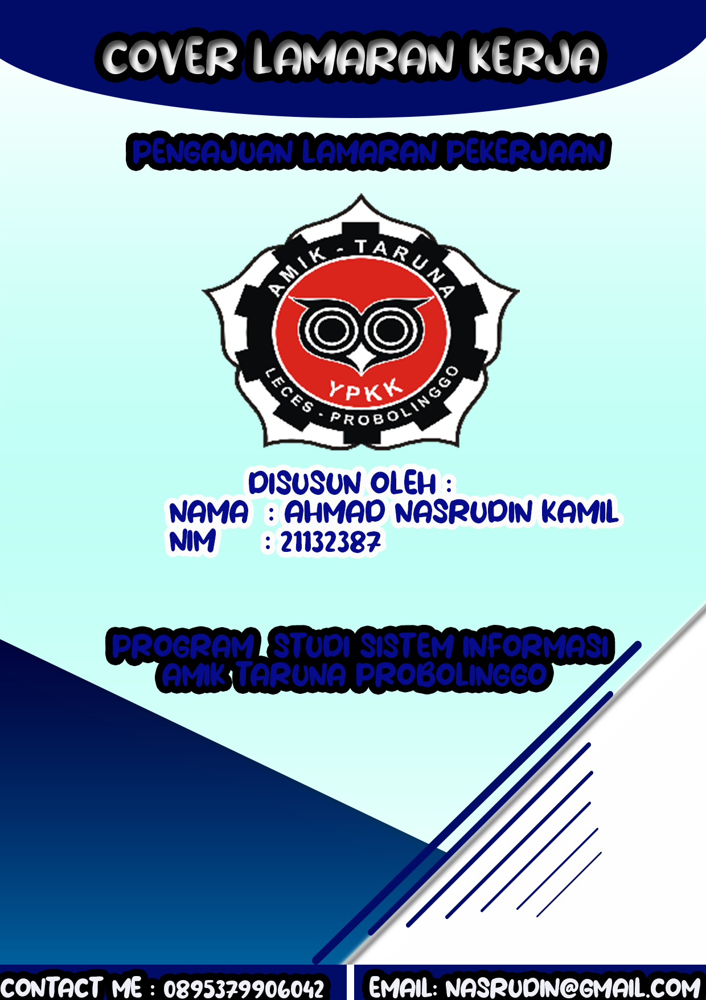
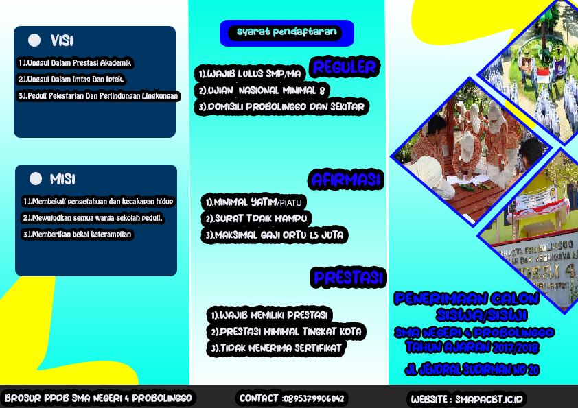

Assalamu'alaikum, Apakah Kalian tau bahwa saya adalah pengedit yang handal? Biasanya saya mengedit dengan canva dan photoshop .
Dulunya saya tidak memiliki basic tentang komputer karena saya sekolah jurusan IPA dan Saya jago sekali berhitung.
Karena saya sekolah di jurusan komputer alhasil saya mau tidak mau harus belajar dari nol tentang komputer.
Dan di amik saya belajar banyak tentang komputer dan coding termasuk tentang desain grafis
Ini adalah beberapa hasil karya saya


Untuk melihat Project Saya Keseluruhan Kalian Bisa Klik Kata disamping :
My Project